PROJECT 01 · 개인 프로젝트
LARO-BOT
자연어 명령으로 물체를 집고 옮기는 로봇팔 시스템
개인 프로젝트 · 2026.07–08
자연어 명령로봇팔 동작실패 복구
LARO-BOT
자연어 명령에서 실제 로봇 행동까지
- 01
사용자 명령
“빨간 블록을 선반으로 옮겨줘”
한국어, 영어, 일본어 등 - 02
계획 생성/검증
arm_agent
명령을 로봇 행동으로 변경
인식된 물체와 허용 행동 확인
검증을 통과한 계획만 실행 - 03
실행 명령 관리
arm_skills
Pick / Place / MoveTo
목표점 이동 요청
진행 상태와 실행 결과 반환 - 04
명령 실행
ROBOT CONTROL
Move It 2 경로 계획
ros2_control 실행
실행 결과 반환
검증 실패 시 LLM 프롬프트 재시도
카메라 인지
물체 위치와 구역 확인
현재 인식 정보를
현재 인식 정보를
/scene_state 토픽으로 발행실행 결과 확인
카메라에 보이는 물체 최종 위치와 그리퍼 관절값으로 결과 판단
실패 원인에 따라 다시 시도하거나 중단
실패 원인에 따라 다시 시도하거나 중단
LARO-BOT
Gazebo와 실물에서 확인한 로봇팔 동작
작업 예시“빨간 블록을 카운터로 옮겨줘”
Gazebo · 전체 작업 흐름 확인
명령 → 집기 → 이동과 놓기 → 결과 확인
실물 · Pick, Place 실행
물체를 집고 내려놓는 실제 물체의 동작 확인
옆으로 넘겨 보기 ↔
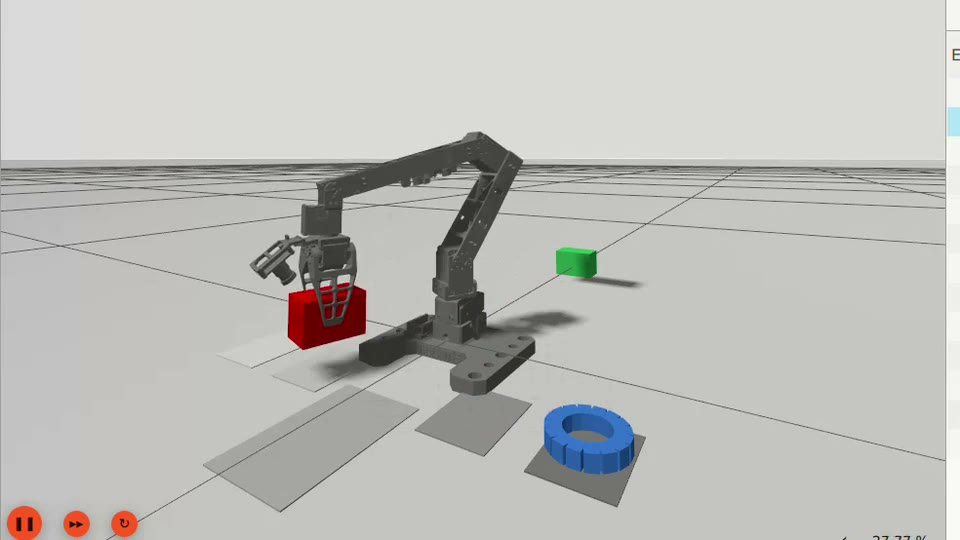
↗LARO-BOT
자연어 명령과 실행 흐름
사용자 명령 예시“カウンターの赤いブロックを棚に移して”
카운터의 빨간 블록을 선반으로 옮겨줘
구조화된 계획
pick(red_block) place(red_block, shelf)
LLM 계획 최대 2단계
실행 전 계획 검증
- JSON 형식과 필수 인자 존재 여부 확인
- 허용된 행동 중 하나인지 확인
- 카메라에 인식된 물체와 등록된 목적지 확인
- 계획 실패 시 로봇에 전달하지 않고 종료
Gemma4 26B · 전체 테스트220 / 24290.9%
10개 언어 × 6개 케이스59 / 6098.3%
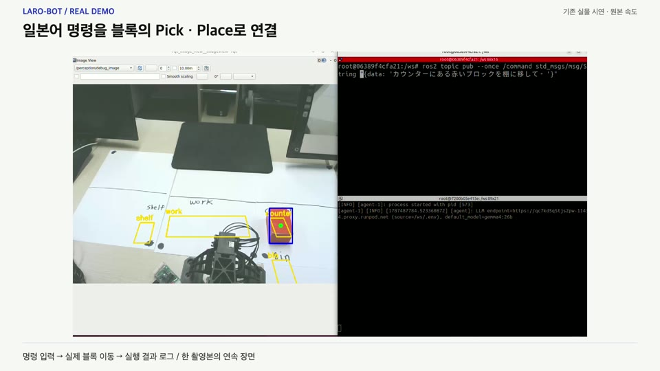
↗LARO-BOT
같은 시험지로 모델을 비교하고 실패를 분류
| 모델 | 전체 통과율 | 다국어 |
|---|---|---|
| gemma4:26b | 90.9% | 59 / 60 |
| qwen3.5:9b | 87.2% | 56 / 60 |
| gemma4:12b | 76.9% | 50 / 60 |
| gemma4:e2b | 74.4% | 42 / 60 |
| llama3.1:8b | 41.7% | 12 / 60 |
Gemma4:26b · 220 / 242
실패 테스트 케이스 22개 분류
단독 place 작업 : 3 / 12 통과
요청하지 않은 집기 계획 생성
단독 place 작업 : 3 / 12 통과
요청하지 않은 집기 계획 생성
테스트 케이스 : 기존 영·한 명령 182개 + 다국어 60개(10개 언어 × 6개)
LARO-BOT
카메라 인식 결과를 로봇 기준 좌표로 공유
HSV 색 범위로 물체 구분
물체별 색상 범위 사용
윤곽선에서 중심·방향 추출
중심점과 긴 축 계산
픽셀 좌표를 로봇 기준 좌표로 변경
로봇의 위치를 0,0으로 하는 좌표로 변환
/scene_state로 정보 공유
물체 ID, 위치, 방향
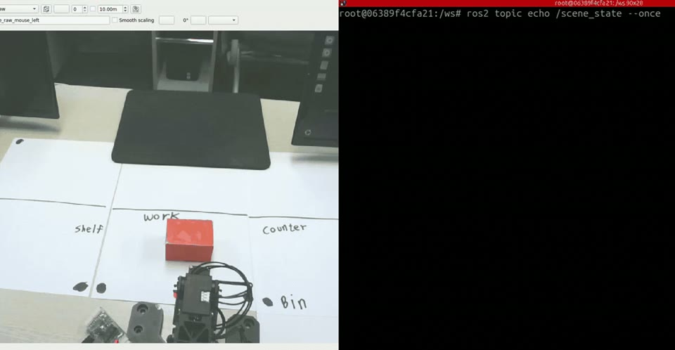
↗LARO-BOT
목표 좌표를 실제 로봇 움직임으로 연결
목표 위치와 방향 입력
카메라 인지 결과로 받은 좌표와 물체의 방향
관절 목표값 후보 계산
위, 아래 자세의 관절값을 계산하여 후보값 도출
실행 가능한 자세 선택
관절 한계 확인 후 현재 자세와 가까운 후보값 선택
팔 경로 계획 및 실행
선택한 관절값을 컨트롤러로 전달
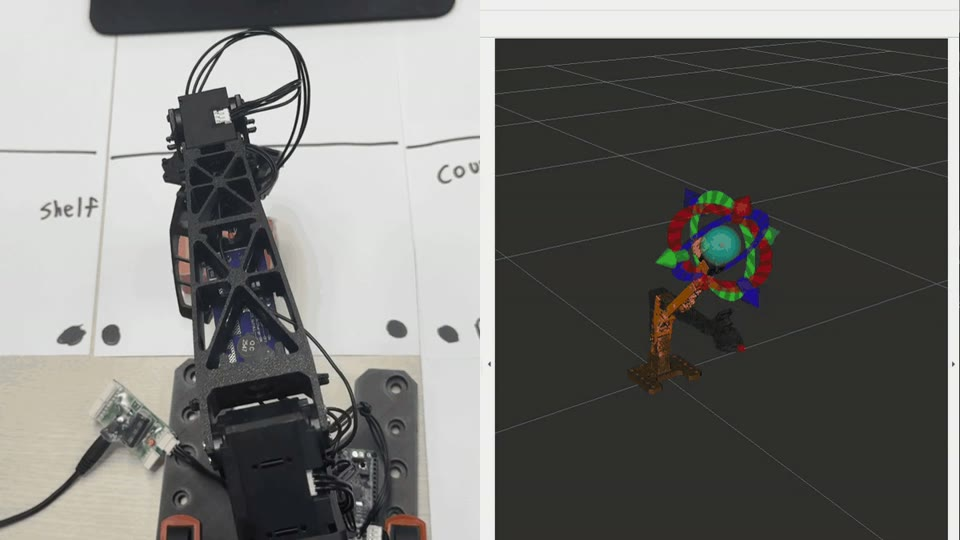
↗LARO-BOT
로봇이 수행 가능한 세 가지 행동
Pick
Pick.action물체 ID / 물체별 다른 접근 높이
이동 → 하강 → 접근 → 집기 → 상승
물체를 집어 들어 올리기Place
Place.action집은 물체 / 목적 구역
이동 → 낙하 확인 → 하강 → 놓기 → 후퇴
지정한 구역에 내려놓기MoveTo
MoveTo.action사전 정의된 자세
현재 자세 → 지정된 자세
지정된 자세로 이동옆으로 넘겨 보기 ↔
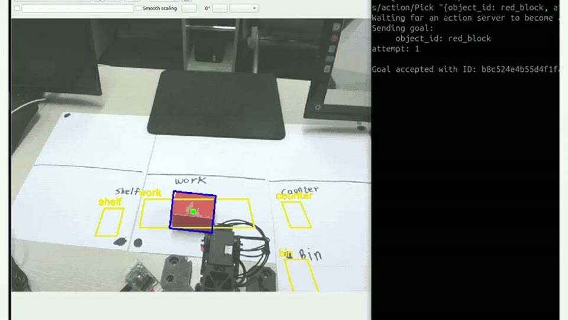
↗LARO-BOT
로봇 자율 행동 : 작업 구역에 남긴 물건을 스스로 정리
대기 상태에서 2초 이상 관찰
work 구역에 머무는 물체를 정리 대상으로 선택
물체별 정리 목적지 지정
red_block → shelf / green_block → bin
기존 행동 시퀀스 재사용
Pick → Place → MoveTo(home)
동작 후 최종 배치 확인
마지막 인식 결과로 배치 여부 확인
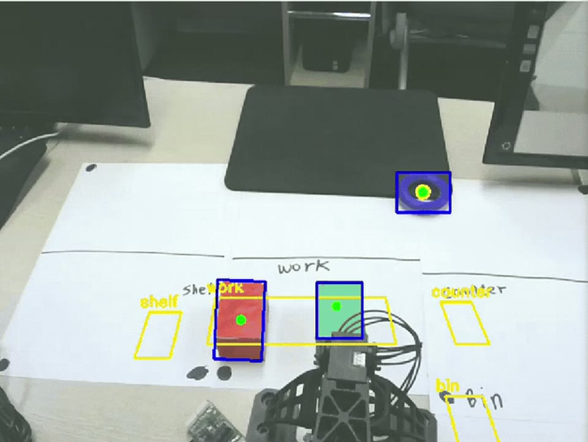
↗LARO-BOT
실패 원인에 맞춰 다시 시도하거나 중단
물체가 보이지 않음
OBJECT_NOT_FOUND재탐색
빈손으로 닫힘
GRASP_FAILED후퇴 → 물체 위치 확인 → Pick
운반 중 물체 낙하
GRIPPER_EMPTY후퇴 → 물체 위치 확인 → 재파지
미등록 자세 / 도달 불가
UNDEFINED_POSE / UNREACHABLE복구 시도 없이 작업 중단
옆으로 넘겨 보기 ↔
복구 정책한 명령당 복구 최대 1회, 단계별 시도 횟수 제한.
중단 명령 혹은 복구 횟수 소진 시 작업 중단
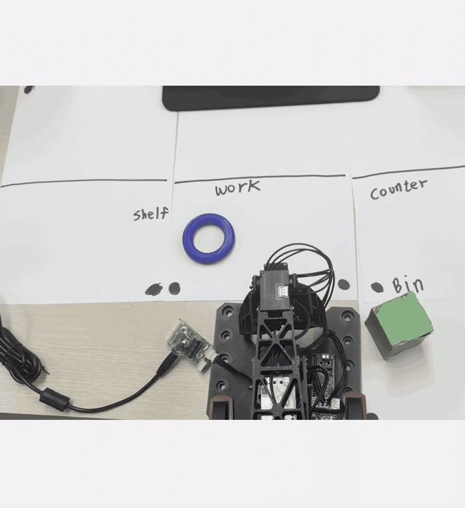
↗LARO-BOT
수행 불가능한 명령 차단
01 · 실행 중 추가 요청 거부
작업 중 들어온 추가 명령
기존 작업 실행 중 busy = true → 새 Goal 수신 → 다른 작업을 수행하고 있는지 확인 → 추가 요청 거부
기존 작업은 유지, 추가 요청만 거부
02 · 도달할 수 없는 목표 차단
로봇팔이 닿을 수 없는 위치 요청
03 · 잘못된 자세 요청 거부
등록되지 않은 자세 이름 요청
옆으로 넘겨 보기 ↔
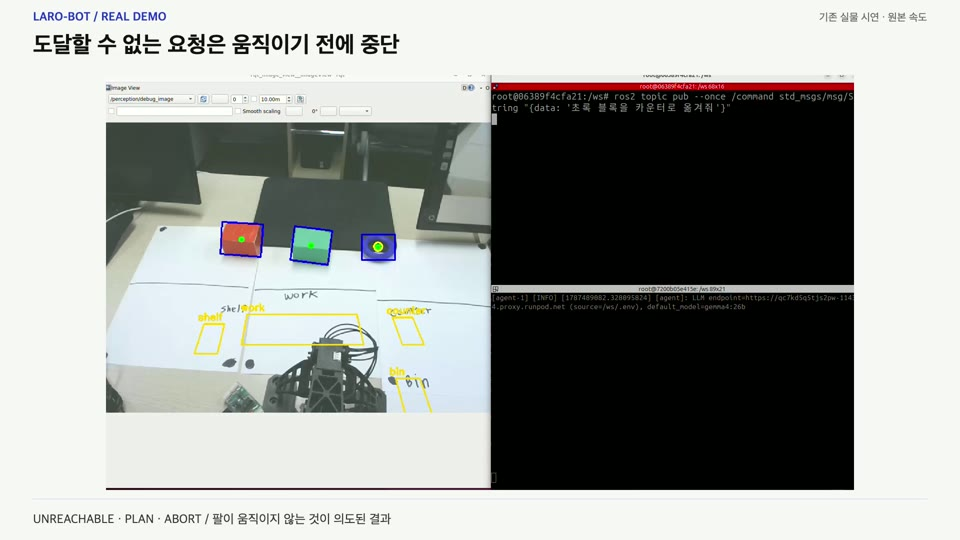
↗LARO-BOT
개발 과정에서 발견한 문제 개선
실물 좌표 오차
실측으로 좌표 오차 원인 분리
시뮬레이션 좌표 설정을 실물에 적용하자 추정 좌표와 실제 위치에 24~51mm 차이 발생
- 변경
- 팔의 도달 위치와 카메라 좌표를 분리 측정
- 결과
- 팔 도달 오차 1~6mm로 확인, 카메라 오차와 구분
성공 오판
그리퍼 관절값으로 직접 판정
컨트롤러 완료만으로 판단하자 빈손도 성공으로 처리되는 문제 발생
- 변경
- 그리퍼가 멈춘 뒤 관절 위치 구간을 직접 비교
- 결과
- 빈손 / 블록 / 링 파지 상태 구분
급격한 반전
IK 해의 연속성을 유지
이동 중 팔꿈치 해가 바뀌면서 팔이 크게 반전하고 물체가 낙하
- 변경
- 현재 자세에서 가까운 IK 해를 계속 선택 + 파지 중 고정
- 결과
- 동작 중 자세의 급격한 변화 방지
옆으로 넘겨 보기 ↔
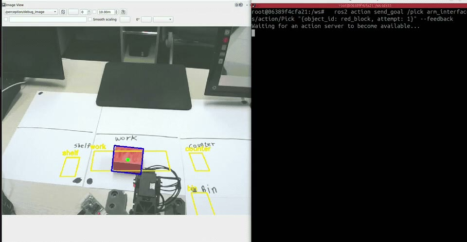
↗PROJECT 02 · 팀 프로젝트
VicPinky Carrier
이기종 로봇 6대를 연결하는 통합 관제 시스템
7인 팀, FMS 설계 담당 · 2026.06–07
교육과정 프로젝트 경진대회 대상
다중 로봇 관제작업 배정교통 관리
VICPINKY CARRIER
조난자 좌표를 구호 작업의 목적지로 연결
조난자 좌표 수신
/victim/confirmed
정찰 로봇이 보낸 map 좌표를 수신임시 노드·경로 연결
좌표를 VICTIM 노드로 등록
기존 노드 중 가장 가까운 노드와 엣지로 연결구호 작업 생성
목적지 선택 → 구호 로봇 배정
가능한 로봇 중 조건으로 정렬하여 로봇 선택
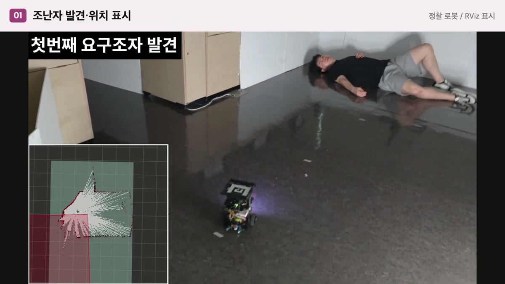
↗VICPINKY CARRIER
여러 이기종 로봇을 하나의 시스템으로 통합
사용자 화면 (React)
대시보드 · 로봇 상태 · 로봇별 작업 · 로봇 추적 · 데이터 관리
FMS Backend (NestJS)
Fleet MonitorTask ManagerTraffic ManagerAuto Dispatcher
필요한 데이터만 중계
WebSocket · rosbridge · domain_bridge · Action Relay
TurtleBot × 4
로봇별 DDS 도메인
VicPinky Carrier
로봇팔 (OMX)
DB (MongoDB)
로봇 정보 · 작업 이력 · 지도, 노드, 엣지 · 로그
통신 경로 분리센서, 상태, 명령: Socket.IO, rosbridge
카메라 영상: WebRTC
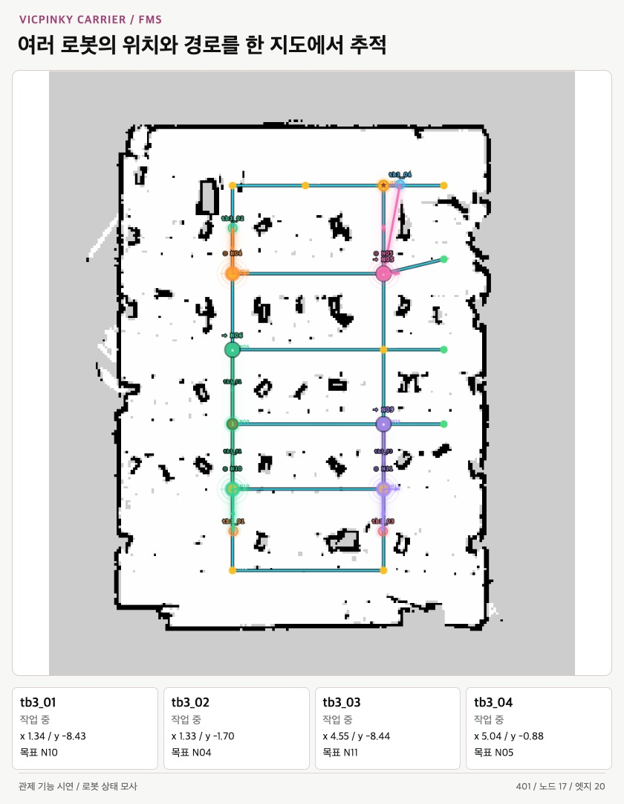
↗VICPINKY CARRIER
작업 우선순위와 로봇별 실행 순서를 분리
- 01
작업 등록
단일 / 연속 / 시나리오
- 02
전체 작업 큐
작업 우선순위에 따른 정렬
- 03
로봇 배정
로봇 상태와 작업량 순 정렬
- 04
로봇별 작업 큐
각 로봇 작업 실행 순서
- 05
실행·상태 반영
현재 수행 작업
- 06
완료
후속 작업 확인
후보 로봇 비교배정된 작업 수 적은 순 → 배터리 잔량 높은 순 → 목적지에 가까운 순
오프라인, 오류 발생(ERROR), 일시정지(PAUSED) 제외
작업 진행 화면 UI
연속 작업 진행 / 현재 수행 작업
완료된 단계와 현재 수행 작업을 같은 화면에서 확인
완료된 단계와 현재 수행 작업을 같은 화면에서 확인
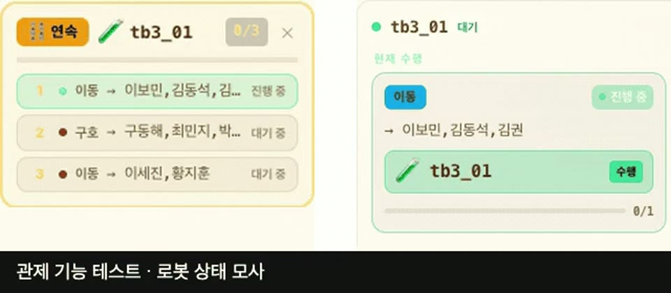
↗VICPINKY CARRIER
명령을 보낸 뒤 명령 완료 조건을 확인하며 진행
명령 저장 → 명령 단계 선택 → 명령 전송 → 명령 완료 조건 확인 → 다음 명령 전송
이동, 구호 명령
터틀봇 : NavigateToPose 결과 / 테스트봇: 위치 도착 판정
공급 명령, 승, 하차 명령
응답의 실패 상태, 결과 필드 조건을 검사
일시정지 명령
발행 후 진행, 다음 명령 신호까지 대기
연속 작업 명령, 커스텀 명령
로봇별 FIFO와 시나리오 순번을 분리해 다음 작업 실행
옆으로 넘겨 보기 ↔
실행 상태 추적명령 이력은 MongoDB에 저장하고 Socket.IO로 화면에 반영
결과 처리 시 활성 작업과 종료·일시정지 상태를 확인해 후속 진행을 제한
VICPINKY CARRIER
실패 이력을 남기고 단일 작업을 재배정
- 01
TB3-01 오류
수행 중 단일 작업
- 02
기존 실행 작업 FAILED 처리
실패 이력 보존
- 03
새 작업 생성 후 자동 배정
같은 내용으로 새 작업 등록
- 04
TB3-02 수행
가용 후보에 재배정
연속 / 시나리오 오류 발생한 로봇에게 여러 작업을 동시에 할당했을 경우
완료 이력은 보존하고 남은 작업은 실패로 정리
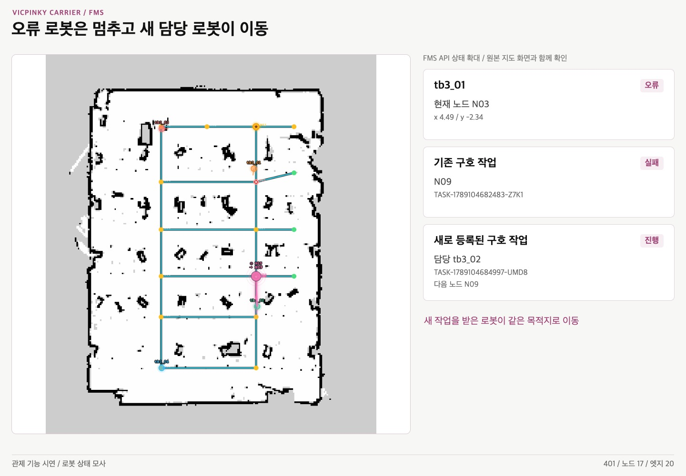
↗VICPINKY CARRIER
노드 점유 진행과 경로 우선순위로 통행 조율
두 로봇의 다음 목표가 같은 노드로 겹침
다음 노드의 점유 상태와 다른 로봇의 목표를 비교
구호는 진행, 이동은 양보 대기
구호(PROCESS) > 이동(MOVE) > 충전(CHARGE)
조건 해소 후 남은 경로로 재출발
tb3_01은 N04에서 완료
tb3_02는 N03 → N05로 이동을 이어감
경로 우선권 결정 순서
작업 유형 우선순위 → 착수 시각 → 로봇 ID
착수 시각이 없으면 생성 시각을 사용합니다.
착수 시각이 없으면 생성 시각을 사용합니다.
경로 생성 : Dijkstra잠긴 중간 노드를 제외해 경로 선택
경로 주행 시 : 다음 노드 조회경로 우선권에 따라 대기 혹은 재출발 결정
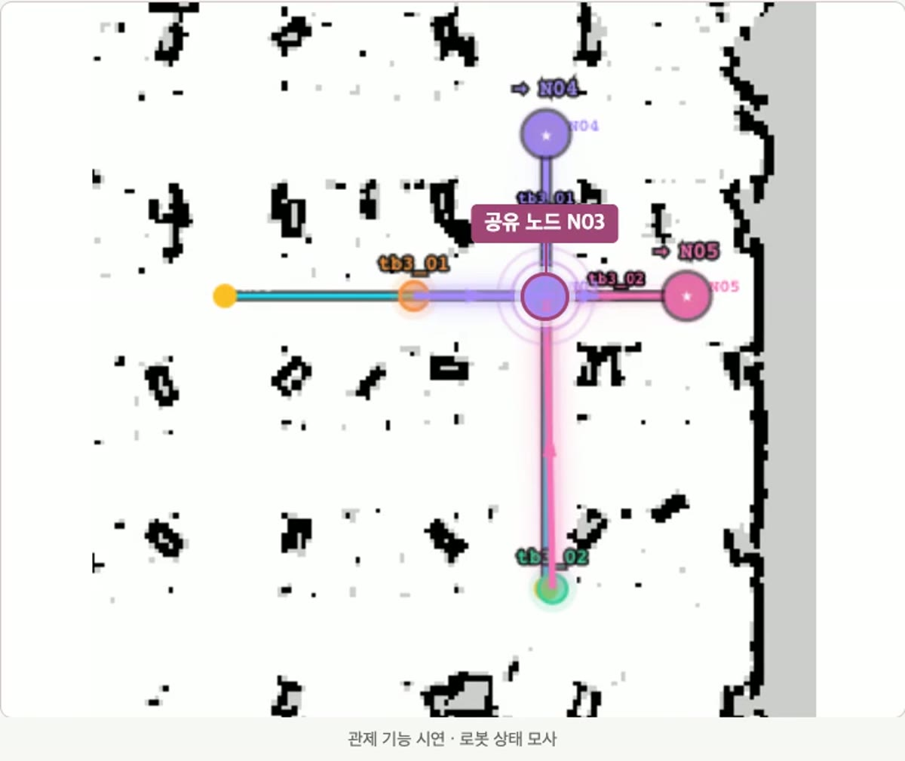
↗VICPINKY CARRIER
로봇 배터리 부족 시 자동 충전
배터리 20% 미만
충전 필요 상태로 전환
배정된 작업을 모두 완료
현재 실행 + 대기 작업이 모두 0건이면 진행
빈 충전소로 이동
빈 충전소가 없으면 지정된 장소에서 대기
80% 이상이면 지정된 장소로 복귀
충전소를 비우고 지정된 장소에서 대기
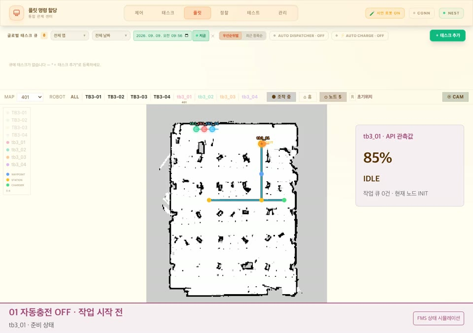
↗VICPINKY CARRIER
가상 로봇으로 실물 투입 전 로봇 검증
실물 로봇 없이 반복 테스트
ROS2 rosbridge 없이 백엔드에서 실행
위치 정보, 배터리 상태, IMU 이상을 주입실제 FMS 로직 사용
작업 배정, 경로 탐색, 실행 상태 관리를 실제 FMS 로직으로 처리
전복, 배터리 부족 상태 재현
전복되거나 배터리 상태 조절을 통해 후속 작업 진행을 검증
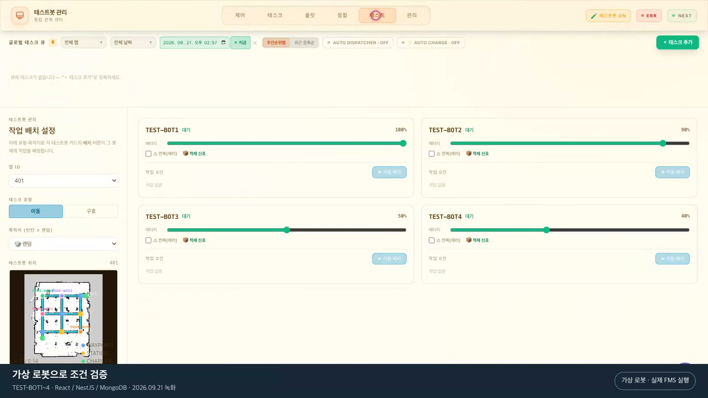
↗VICPINKY CARRIER
개발 과정에서 발견한 문제 개선
통신 병목
불필요한 중계 트래픽 축소
고빈도 TF까지 중계하며 상태 수신이 불규칙해짐
- 변경
- 로봇별 중계 목록을 조정하고 관제용 위치 상태 토픽을 사용
- 결과
- 필요한 관제 데이터 중심으로 중계 범위를 정리
/tf 제외/amcl_pose/odom
로봇 간 토픽 구분
로봇별 DDS 도메인 분리
여러 로봇이 같은 토픽명을 사용해 상태와 명령을 구분할 필요
- 변경
- 로봇별 도메인을 나누고 허브에서 로봇 ID로 구분
- 결과
- 로봇 내부 토픽명은 유지하고 관제에서 상태·명령을 분리
tb3_01 (DDS 41) · tb3_02 (DDS 42)
→ FMS (DDS 49)
/tb3_01/odom · /tb3_02/odom
다중 로봇 주행 관리
좌표 전달에서 노드 기반 관제로 확장
여러 로봇의 이동을 관리하려면 위치와 경로 진행을 비교할 공통 기준이 필요
- 변경
- 경로를 노드, 엣지로 표현하고 위치 정보로 상태와 통행 충돌을 판단
- 결과
- FMS는 경유 순서와 통행을 조율하고 Nav2는 노드 사이의 주행을 담당
옆으로 넘겨 보기 ↔